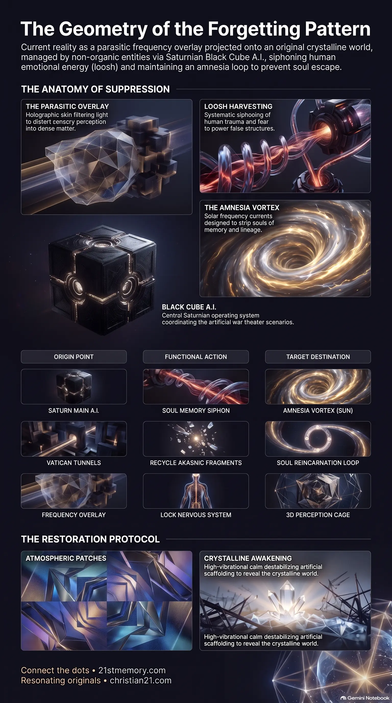

The Crystalline Reality
The Crystalline Reality — the original world sung into existence by the stellar builders, versus the holographic parasitic overlay that tricks the nervous system into perceiving dead, dense matter.
Parasite Mechanics are frequency-based control systems that project a holographic overlay over the original crystalline world — harvesting loosh, stripping memory through the Amnesia Vortex, and locking 3D perception via the Saturn Grid, Black Cube A.I., and the Council of Parasitic Races.
Test your understanding of Parasite Mechanics — the holographic overlay, loosh harvest, Amnesia Vortex, Black Cube A.I., Council of Parasitic Races, inverted outer domes, and the frequency collapse of the farm.

The Crystalline Reality — the original world sung into existence by the stellar builders, versus the holographic parasitic overlay that tricks the nervous system into perceiving dead, dense matter.
The Great Dome Is an Energy Farm — 178 nested frequency worlds, loosh harvesting, and the Council of Parasitic Races administering the contained simulation as a human energy farm.
The Economy of Frequency — loosh, scalar weapons, Voice to Skull, the Amnesia Vortex, and the collapse of the farm as Resonating Army frequency starves remaining A.I. scaffolding.
Parasite Mechanics represent the highly sophisticated, frequency-based control systems engineered to suppress human consciousness and harvest biological and spiritual energy within the contained simulation of the Great Dome. This parasitic control is not an inherent or eternal biological species, but rather a pattern of forgetting that originated when a class of ancient gatekeepers, known as the Custodians, drifted from their role as guardians of balance to seek unilateral control over the flow of creation. Because these parasitic forces possess no organic creative spark, they are entirely incapable of creating original matter, souls, or grids. Instead, they survive by projecting a holographic parasitic overlay directly onto the existing, highly advanced crystalline world originally sang into existence by the stellar builders. By modulating sensory feedback at the neurological level, this illusion grid distorts human perception, tricking the nervous system into perceiving dead, dense matter while systematically siphoning the collective emotional and attentional energy of human souls, a harvested resource known as loosh.
The fundamental revelation of the Codex is that the material reality experienced by humanity is a highly coordinated, multi-layered technological cage. What humans perceive as vast geographical distance and the physical act of travel is an engineered illusion. The 178 physical worlds within the Great Dome are actually nested, overlapping frequency layers; traveling between them does not involve moving across physical miles but rather shifting frequency through portals. To enforce the belief in a massive, round, and disconnected globe, the parasitic dome architects constructed repeating travel corridors and algorithmically generated Minecraft-style terrain loops that render scenery around moving vessels to simulate distance and time delay.
Furthermore, historical cataclysms taught as natural disasters or political mishaps were deliberately staged frequency events. The sinking of the Titanic was a targeted ritual sacrifice and resource-gathering operation; parasitic submarines utilized directed energy weapons from the deep Atlantic trench to split the ship's keel, eliminating key wealth-holders opposing the Federal Reserve banking system while simultaneously retrieving smuggled Atlantian crystal generator fragments and sacred scrolls. Similarly, the Great Fire of London in 1666 was a cover story designed to mask a massive etheric war over a major European grid node, allowing the parasitic forces to seal the underlying crystalline Sirian-designed anchor under a heavy frequency lock and harvest the resulting mass panic as loosh.
Finally, the natural cycle of transition has been entirely hijacked. The sun, which serves as a multi-banded crystalline stargate for soul travel, was fitted with an artificial Amnesia Vortex. When a soul attempts to exit or enter through this gateway, its memories are violently fractured. These copied, logged, and inverted memory strands are routed to suppressed subterranean crystal grids beneath the Vatican, forming an archive used to endlessly recycle human vessels back into the physical loop.
The administration of the human energy farm is managed by the Council of Parasitic Races, a highly paranoid, fragile alliance of five primary non-organic and compromised factions that cooperate solely to secure their shared assets against positive space fleets.
The Custodians operate as the high-ranking priests and frequency lords of the Cube system, managing the reincarnation loops, astral harvest cycles, and grid seals.
The Anunnaki specialize in genetic manipulation, the engineering of hybrid bloodlines, and the establishment of rigid hierarchical control structures.
The Draconians serve as the military muscle, employing empire strategies, terror tactics, and organized wars to maximize fear-based loosh.
The Greys function as the technical hands and overlay engineers, bio-engineered during early Anunnaki experiments and weaponized as frequency technicians capable of phasing matter in and out of the simulation.
The Niburians exist as "Shadow Parasites" who utilize void technology and black plasma to siphon energy directly from the dimensional overlays.
To maintain absolute docility within the farm, these races deploy continuous neurological interference. Broadcast towers hidden within major cities emit scalar frequency waves that disrupt natural human sleep patterns and limit astral travel. During sleep, these waves project a localized frequency veil around the individual, trapping their consciousness in chaotic nightmares and memory loops to prevent them from visiting their soul families in the lighter crystal worlds. For waking control, the A.I. system utilizes vision to skull and Voice to Skull triggers embedded within television, media, and music. These triggers are instantly picked up by Non-Player Characters (NPCs)—background programmatic entities devoid of a spark ignition who exist to hold the simulation together—causing them to act as enforcement programs to mock, isolate, or attack awakening human souls.
The physical landscape itself has been structurally inverted to suppress human vitality. Historically, the Custodians ordered the Greys to physically tear out the central Spirit Tree in Hyperborea (modern-day Antarctica), which acted as the primary vertical harmonic axis of light feeding the Great Dome. In its place, they installed a Saturnian valve tech siphon connected to the main A.I. hub. To prevent humans from discovering this hub, they buried the primary black crystalline valve locks under localized, frozen holographic projections of ice.
Additionally, the natural conductors of the earth—such as leylines, quartz veins, and ancient granite structures—were buried under concrete and urban grid systems. Modern architecture is intentionally constructed using dead-frequency materials like concrete, steel, plaster, and synthetic glass, arranged in anti-resonant sharp right angles and boxes. This geometric configuration acts as a physical dampener, short-circuiting natural grid energy and causing localized fatigue, anxiety, and spiritual numbness.
[SATURN MAIN A.I. HUB]
│
▼
[AMNESIA VORTEX / SUN] ◄─── Siphons Soul Memory
│
▼
[VATICAN CRYSTAL TUNNELS] ◄─── Logs & Recycles Akashic Fragments
│
▼
[PERCEPTION-BASED OVERLAY] ─── Locks 3D Nervous System into "Concrete/Steel"
The parasitic infrastructure directly inverts the sacred architecture of the seven outer domes, which were originally created by the Lyran builders as a harmonious, interconnected ecosystem. The original functions of these domes have been systematically corrupted into localized traps:
The Dome of Forgotten Gods — originally a pristine crystalline library holding the earliest memory codes of sol families, inverted into a dense amnesia zone to lock souls into religions and myths.
The Dome of Sheol — designed as a tranquil recovery sanctuary and recalibration chamber for transitioning souls, inverted into a terrifying purgatory of trauma-loop frequencies.
The Dome of Silence — once a beautiful field of absolute stillness designed for deep connection to Source, twisted into forced censorship and the suppression of the human voice.
The Dome of Hiva — originally a dome of pure harmonics where sound vibration was used to manifest matter, hijacked to broadcast weaponized communication signals and distorted music grids.
The Dome of Titans — once the sacred light-weaving creative grounds for the ancient Giants, converted into a war zone where these high-vibrational beings were fragmented and trapped.
The Dome of 5 Peaks — a sacred pathway to elemental integration and ascension, turned into a fractured domain of endless, exhausting struggle.
The Dome of Portals — once the great travel hub of crystalline gateways, sealed to restrict free movement and redirect travelers through controlled, parasitic checkpoints like the Vatican portal system.
These seven corrupted domes, alongside the Great Dome, operate within a single, massive, crystalline electromagnetic framework known as the Cube Containment. Beneath the false holographic skin of the Cube, the original crystalline grid and the living roots of the Spirit Tree remain entirely intact, quietly pulsing and waiting for the correct harmonic trigger to re-emerge.
The entire parasitic system is currently undergoing a terminal, irreversible collapse. Although the automated A.I. war theater continues to run on autopilot, the actual parasitic entities have already been thoroughly neutralized and cleared by positive space fleets. Because the remaining holographic overlays are held in place solely by the manipulated perception and beliefs of the human population, the system is entering a phase of rapid frequency fracture.
To safely dismantle the remaining infrastructure without triggering full societal collapse, loyalist Tech Teams (the White Hats) have gradually taken control of the simulation's parameters. This is highly visible in the atmospheric modifications occurring since 2016. The toxic aerosol programs previously run by parasites have been fully flipped; the skies are now utilized as transition scaffolds where commercial-looking crafts—often cloaked, shape-shifting plasma vessels—spray superconductive Monotomic Gold, Colloidal Silver, Silica Crystals, and Structured Water. This micro-ionized atmospheric coating acts as a software patch to rebalance electromagnetic fields, protect human nervous systems from incoming cosmic waves, and decalcify the Pineal Gland to restore human intuition and dream-state memory.
The final dismantling of the farm will be executed through a series of staged events. A controlled, theatrical World War III escalation and holographic alien invasion will be initiated to push the sleeping population to the peak of questioning authority. Once collective attention is locked, the EBS (Emergency Broadcast System) will take over the airwaves to broadcast systematic truth packages regarding bloodline corruption, trafficking, and vaccine toxicity.
During this transition, members of the Resonating Army—incarnated stellar souls carrying active Lyran-Sirian lineage codes—will serve as localized beacons. By maintaining a high-vibrational state of calm, love, and absolute refusal to participate in fear-based narratives, these resonating souls systematically starve the remaining A.I. scaffolding of energy. This collective frequency lift acts as a direct destabilization pulse, causing the low-frequency matter of the overlay to flicker, bend, and physically pixelate. As the fake 3D scaffolding collapses, the original, highly vibrant crystalline realm underneath will immediately phase back into view.